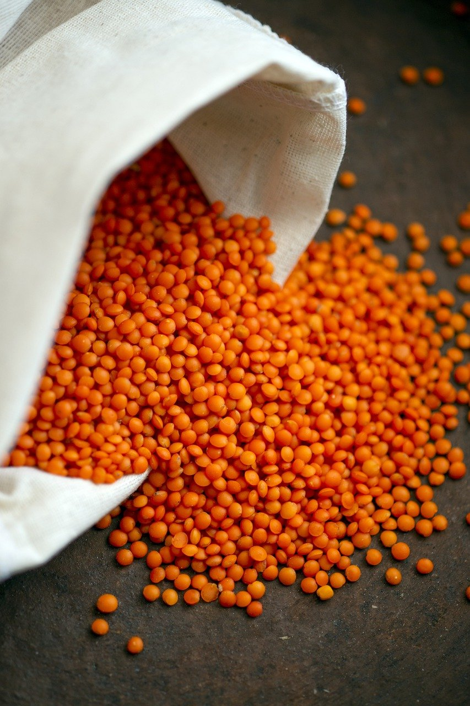

Tomatiger Linsendal
Anzahl der Portionen:
Wählen Sie bitte eine Anzahl zwischen 1 - 20 aus!
Für den Teig:
- 150 g Rote Linsen
- 1 Zwiebel(n)
- 1 Knoblauchzehe(n)
- 2 Ingwer
- 200 ml Kokusmilch
- 20 g Tomatenmark
- 20 ml Kokosöl
- 1 Koriander
- 0.5 Kreuzkümmel
- 0.5 Kurkuma
- 250 Gemüsebrühe
- Salz und Pfeffer
Zubereitung
Linsen waschen. Zwiebel, Knoblauch und Ingwer schälen und würfeln. Zwiebel, Knoblauch und Ingwer 3 Min. in Kokosöl dünsten. Koriander, Kreuzkümmel und Kurkuma unterrühren und 30 Sek. anrösten. Gemüsebrühe, Kokosmilch und Linsen
hinzufügen und alles zugedeckt 25 Min. köcheln lassen. Den Dal mit Salz, Pfeffer und Tomatenmark abschmecken.
Tipp: Köstlich mit Mango-Chutney und Reis.
Rezept erstellt von
Finn